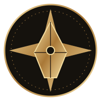

Clasificación científica
Reino, división, clase, orden, familia, género y especie, con nombres científicos y sinónimos documentados.

OQTHERAEXPLORACIÓN CIENTÍFICA ABRIR EXPLORADOR ↗Explora la Tierra, conoce la historia de la vida y descubre la naturaleza que nos rodea. Observa, investiga y contrasta: cada hallazgo abre una nueva pregunta.
Explora la Tierra, conoce su historia y recuerda: aquí, en este instante, también somos naturaleza.
Orientación científica, nunca certezas inventadas.
Fósiles, historia de la vida, periodos geológicos y patrimonio paleontológico.
ENTRAR EN PALEONTOLOGÍA ↗ 03 / MINERALOGÍAPropiedades, clasificación, identificación y fichas mineralógicas.
ENTRAR EN MINERALOGÍA ↗ 04 / RUTASItinerarios geológicos, paleontológicos y naturales documentados.
EXPLORAR RUTAS ↗ 01 / HERRAMIENTARegistra propiedades observables y obtén posibilidades que podrás contrastar.
EMPEZAR IDENTIFICACIÓN ↗ 02 / CATÁLOGOConsulta el catálogo de datos propio de OQTHERA, con fichas versionadas y estados de revisión transparentes.
VER COLECCIÓN ↗ 03 / COMPROMISOConoce nuestros compromisos con la ciencia, la naturaleza, los datos y la transparencia.
VER COMPROMISOS ↗Esta primera versión trabaja con un conjunto limitado de minerales frecuentes. Responde solo a propiedades que hayas observado. Si no tienes información suficiente, puedes indicarlo.
Fichas introductorias para aprender a comparar propiedades. Las categorías disponibles se irán ampliando tras revisar los datos y las imágenes de cada muestra.
Las fichas sin fotografía propia se muestran como referencias textuales. No se atribuyen imágenes ni procedencias que no hayan sido verificadas.
Busca fotografías en Wikimedia Commons y revisa su autoría, licencia y página original. Los resultados son candidatos: no se incorporan al entrenamiento hasta que una persona confirme la identificación y los permisos.
La exportación genera filas pendientes. No asigna un ejemplar físico ni marca ninguna foto como científicamente verificada.
Cada archivo de Wikimedia Commons puede tener condiciones distintas. Comprueba siempre la página original y la licencia completa antes de reutilizarlo.
Consulta lugares de interés geológico y paleontológico. La ubicación del dispositivo es opcional: puedes explorar sin compartirla o activarla expresamente cuando quieras.
Si decides compartir tu posición, el navegador solicitará permiso. OQTHERA convertirá las coordenadas geográficas a UTM WGS84 e indicará la zona, el hemisferio, Este y Norte.
La posición se procesa en esta página y no se guarda ni se envía a un servidor. UTM sirve para localizar puntos; no indica por sí solo que un lugar sea accesible o que esté permitido recoger muestras.
Ubicación desactivada. No se solicitará permiso hasta que pulses el botón.
Las rutas se incorporarán con fuentes verificables, coordenadas revisadas, accesibilidad y situación legal. No publicaremos puntos sensibles de yacimientos vulnerables ni indicaciones para extraer fósiles.
Una sección de botánica con la misma estructura documental que mineralogía: taxonomía, morfología, distribución, hábitat, ecología, fotografías y referencias.
Reino, división, clase, orden, familia, género y especie, con nombres científicos y sinónimos documentados.
Hojas, tallos, raíces, flores, frutos, semillas y rasgos diagnósticos observables.
Ambientes, distribución conocida, adaptaciones y relaciones ecológicas.
Comparación guiada de características. Los resultados serán orientativos y mostrarán cuándo faltan datos.
La sección queda preparada como estructura; sus fichas y claves se añadirán cuando cada dato tenga referencias y revisión.
Guías breves para saber cómo actuar ante imprevistos durante una salida. No sustituyen a los servicios de emergencia ni a la formación oficial.
Aléjate del peligro si puedes hacerlo sin exponerte y llama al 112. Indica qué ocurre, dónde estás y si hay personas en peligro.
Detente en un lugar seguro, evita seguir caminos desconocidos, intenta localizar tu posición y contacta con el 112 si no puedes regresar o existe riesgo. Conserva batería y comparte referencias visibles.
Abandona crestas, cumbres, zonas expuestas y cauces. Busca refugio seguro en un edificio o vehículo cerrado. No te refugies bajo árboles aislados ni junto a estructuras metálicas.
Llama al 112, aléjate del humo y sigue las indicaciones oficiales. No atravieses humo ni intentes acercarte al frente del incendio para observarlo o fotografiarlo.
Asegura primero la zona. Llama al 112 si la lesión es grave, hay pérdida de conocimiento o no sabes cómo actuar. Sigue las instrucciones del operador y no muevas a la persona si sospechas una lesión importante, salvo peligro inmediato.
Aléjate de barrancos, ramblas y cauces. No cruces agua en movimiento ni a pie ni en vehículo. Busca terreno elevado y sigue los avisos oficiales.
No lo extraigas ni alteres el afloramiento. Fotografía el contexto desde una distancia segura, anota la ubicación de forma responsable y consulta a la autoridad patrimonial competente.
Contenido inicial para España. Antes de publicar la sección como guía definitiva, revisaremos cada protocolo con fuentes oficiales de protección civil, emergencias y autoridades autonómicas.
OQTHERA es una plataforma de exploración y aprendizaje sobre la Tierra, la vida y su historia. Nos comprometemos a observar antes de concluir, contrastar antes de publicar y proteger el patrimonio natural y científico.
La primera etapa se centra en minerales frecuentes y grandes grupos de rocas. La identificación detallada de fósiles y la prospección minera quedan fuera de esta versión.
Los resultados son orientativos. Se mostrarán alternativas, datos pendientes y casos sin información suficiente en lugar de presentar una certeza aparente.
OQTHERA mantiene su propio catálogo JSON. Cada ficha debe incorporar referencias consultables, autoría de imágenes, licencia y fecha de revisión antes de marcarse como verificada.
OQTHERA mantiene su propio catálogo y no depende de APIs externas para funcionar. Las fuentes especializadas se utilizan como referencias de consulta para documentar y revisar los datos, no como servicios de los que dependa la aplicación.
El catálogo de OQTHERA se sirve desde data/minerals.json. Las fichas iniciales están pendientes de auditoría científica; no se presentan como verificadas.